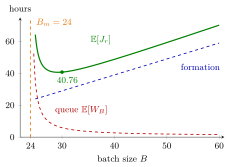

Server Setup¶
Definition¶
A setup (or change-over) is an interval during which a server does not serve but prepares for jobs of another type, for example cleaning a paint machine before a change of colour, bringing an oven to a new temperature, or staff walking to another part of a building.
The notes' setup model has one machine and two job families, red and blue, arriving at rates and , , with inter-arrival SCV for both. Net service times are i.i.d. copies of , and setup times are i.i.d. copies of , independent of the service times. Jobs are collected per colour into batches of fixed size . A complete batch joins a queue of batches; when it reaches the server, the machine performs one setup and then serves the jobs one by one, and each job leaves as soon as its own service ends. The components of the sojourn time of a job of colour are:
- Batch formation: on average (batch formation time).
- Queue of batches: batches arrive at rate and need , with , so the load is . Sakasegawa's formula with and the batch SCVs below gives the expected time a batch spends in queue.
- At the server: on average , namely the setup, the jobs of the batch served before the job, and the job itself.
The SCVs of the batch inter-arrival and batch service times are
and the expected sojourn time of a job of colour is the sum
Interpretation¶
Setups consume capacity without serving anyone. Producing in batches spreads one setup over jobs, so larger batches lower the load, but every job must then wait for its batch to fill and for the jobs ahead of it in the batch. The model makes this trade-off computable: each component is either a simple average or an application of Sakasegawa's formula to the queue of batches.

The figure plots Example 1 against . Just above the minimal batch size the load is close to and the batch queue time (red) explodes, because grows like . For large the queue time is small but the formation time hours (blue) and the time at the server grow linearly, so the total (green) rises again. The minimum lies near , and the curve is far from symmetric: a slightly too small is much worse than one too large.
Stability needs , that is,
which requires in the first place: no batch size can absorb a server that is already overloaded by net work. The model is the queueing counterpart of the setup cost of OR Modelling: there a fixed charge per order favours large lots, here a fixed time per batch does. Turning the setup into an extra service time per job leads to the setup effective service time. A common slip is to forget the formation and in-batch waiting.
In Week 7 the same approach handles server adjustments and outages.
Key Results¶
- Batch load. , which decreases in when (TF 6.2.3).
- Minimal batch size. if and only if , provided .
- Batch SCVs (6.2.3). , since inter-arrival times are added (TF 6.2.4); by independence (Exercise 6.2.9).
- Time at the server (6.2.5). if a job leaves after its own service, and if it waits for the whole batch.
- No monotonicity. Larger batches lower the queue time but raise the formation time, so increasing does not always reduce (TF 6.2.2, 6.2.5).
- Family-specific batches. With very different arrival rates, should in general depend on the family, because the formation time is largest for the rarest family.
Examples¶
1. Red and blue jobs (Exercise 6.2.6). Jobs arrive at per hour with ; and per hour. Net service is exponential with mean minutes, so hour and . A clean-up takes hours with standard deviation hour. Then
so the smallest allowed batch size is . For : , , , , and . Sakasegawa's formula gives
A red job waits hours for its batch and spends hours at the server, so hours.
2. The blue jobs. With the same , a blue job's batch fills five times as fast: hours. The queue and server parts are shared, so hours. One common batch size treats the rare family badly.
3. Too small or too large. In Example 1, gives and hours, the minimum over integer is hours at , gives hours, and gives hours. Undershooting the best batch size by four costs as much as overshooting it by about twenty.
4. Waiting for the whole batch. If a red job may leave only when its batch is finished, its time at the server becomes hours instead of , and hours for .
Prerequisites¶
Related Concepts¶
- Batch Formation Time
- Setup Effective Service Time
- Batch-Arrival Queue
- N-Policy
- Server Adjustment
- Non-Preemptive Outage
Sources¶
- Stochastic Operations Research · Week 6
- N. D. van Foreest, Sample Path Analysis and Simulation of Stochastic Systems, Section 6.2
Aliases: setup time, change-over time, changeover time, server setups, batching with setup times, production runs Keywords: setup time R, net service time S_0, batch size B, B_m=\lambda\mathbb{E}[R]/(1-\lambda\mathbb{E}[S_0]), \mathbb{E}[S_B]=\mathbb{E}[R]+B\mathbb{E}[S_0], C_{a,B}^2=C_a^2/B, batch queue, red and blue jobs, sojourn time of a red job Symbols: element of, lambda, rho, sum
Last updated: 29 October 2026 20:42
Server SetupBatch Formation TimeNon-Preemptive OutageSetup Effective Service TimeSakasegawa's FormulaServer LoadSojourn TimeSquared Coefficient of VariationSetup CostBatch-Arrival QueueN-PolicyServer Adjustment